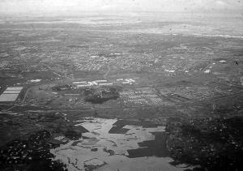
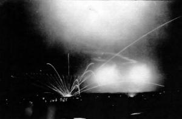
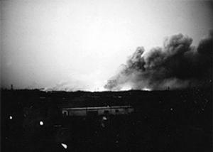

KHI TRỜI HỬNG SÁNG

ối với người Mỹ chiến đấu tại Việt Nam, thời gian là tất cả; với người Việt Nam, thời gian chẳng có ý nghĩa gì. Trong khi lính Mỹ thường đếm những ngày qua đi để biết rằng mình còn phục vụ tại Việt Nam bao lâu nữa, các binh sĩ Việt Nam không bao giờ biết thời gian tại ngũ của họ sẽ kéo dài tới lúc nào. Đối với một số người, cái chết hoặc việc mất đi chân tay có thể khiến họ chấm dứt binh nghiệp; nhưng phần lớn vẫn phải lăn lộn trên chiến trường trong năm năm hoặc dài hơn. Quan trọng đối với người Việt Nam lúc này không phải là vấn đề ngày tháng và thời gian. Quan trọng nhất là phải gắng sống sót hôm nay để ngày mai tiếp tục chiến đấu. Điều đó đã tôi luyện các binh sĩ Việt Nam lòng kiên nhẫn. Người lính biết rằng nếu cơ hội không đến ngày hôm nay thì phải chờ; và khi cơ hội đến, cũng cần phải kiên nhẫn trong việc thực hiện một cuộc tấn công để đảm bảo thắng lợi cuối cùng.
Những câu chuyện sau cho ta một cái nhìn xuyên suốt tinh thần của người Việt Nam, về việc họ sử dụng lòng kiên trì như một thứ vũ khí chống lại kẻ thù cũng như họ làm thế nào để phát huy tính kiên nhẫn cho thành công của các trận đánh.
KHI TRỜI HỬNG SÁNG
Không một nhóm đơn lẻ nào khiến lực lượng Mỹ và Việt Nam Cộng hòa lo ngại bằng đặc công Bắc Việt.
Các binh sĩ đặc công đã được đối thủ của họ trên chiến trường nể phục. Họ luôn tạo ra nhiều mối đe dọa đột kích nhằm vào quân Mỹ, trong đó đặc biệt đáng chú ý là khả năng siêu việt trong việc âm thầm đột nhập vào những nơi được canh gác cẩn mật nhất. Trong vài trường hợp, lính đặc công mất cả ngày để đột nhập và thoát ra khỏi căn cứ mà kẻ thù không hề hay biết. Họ luôn làm việc theo nhóm với số thành viên tùy thuộc vào nhiệm vụ, và người ta có thể cho rằng, nếu đem ra cân đo đong đếm, đặc công là lực lượng gây ra nhiều tổn thất cho các nỗ lực chiến tranh của người Mỹ hơn bất kỳ một đơn vị chiến đấu đơn lẻ nào khác.

Năm 1972, Đại tá Tống Viết Dương chỉ huy Trung đoàn Đặc công 1131 – lực lượng gồm hai ngàn người – được huấn luyện đặc biệt về chiến tranh phi quy ước. Ông đã phái một nhóm đặc công thực hiện cuộc tấn công nhằm vào kho đạn lớn nhất của kẻ thù, nằm tại Long Bình gần Biên HòaCăn cứ Long Bình rất lớn, bao trùm một diện tích chừng năm cây số vuông. Nhiều loại đạn dược được trữ ở đây, từ đạn súng nhỏ tới đạn pháo và cả vũ khí của máy bay. Tất cả số vũ khí đạn dược này sẽ được phân bổ tới các căn cứ quân sự khắp miền Nam. Ý thức được rằng một kho vũ khí quan trọng như thế rất dễ trở thành mục tiêu tấn công, quân Mỹ và Việt Nam Cộng hòa đã tìm cách làm cho Long Bình trở nên bất khả xâm phạm. Họ nghĩ đã thực hiện được điều đó.
Căn cứ được bao bọc bởi chín hàng rào kẽm cao hai mét, bên trên chằng chịt gai. Từ hàng rào thứ nhất (ngoài cùng) tới hàng rào trong cùng trải dài hàng trăm mét. Khoảng giữa là những gò đất và vùng ngập nước. Khoảng cách giữa hàng rào thứ nhất và hàng rào thứ hai lớn hơn nhiều cự ly giữa các hàng rào còn lại. Ngay bên trong vành đai ngoài của doanh trại là các tháp canh nằm cách nhau 200 tới 500 mét. Cách bố trí này tạo cho phe phòng thủ có thể dễ dàng bắn chéo cánh sẻ vào quân đột nhập. Mỗi chốt đều có người canh gác 24/24. Ban đêm, đèn pha trên tháp canh liên tục quét cả bên ngoài lẫn bên trong vành đai ngoài cùng từ chập tối tới lúc trời sáng. Nhiều hộp thiếc được buộc vào các hàng rào phía trong để kẻ đột nhập nào sơ ý đụng phải sẽ phát ra âm thanh. Giữa các hàng rào còn có vô số mìn sát thương. Vị trí đặt mìn được thay đổi liên tục để đối phương không tài nào đoán biết được. Bẫy pháo sáng cũng được cài nhiều nơi. Khi bị kích hoạt, ống phóng sẽ bắn pháo sáng lên độ cao hàng trăm mét, rồi một chiếc dù bung ra giúp pháo sáng rơi xuống từ từ, và trong lúc rơi nó soi rọi một vùng rộng lớn. Các kho đạn ở Long Bình được bố trí phân tán trên một khu vực rộng lớn để tránh trường hợp một kho phát nổ sẽ tạo ra hiệu ứng dây chuyền. Ninh lính liên tục tuần tra xung quanh bằng xe cơ giới, mỗi đợt tuần tra cách nhau năm phút. Bên cạnh đó, lính tuần đi bộ cùng với chó đánh hơi cũng thường xuyên hỗ trợ lực lượng tuần tra cơ giới.
Mìn bên trong các hàng rào thép gai tạo cảm giác an toàn cho những người phòng thủ, nhưng cũng gián tiếp tạo thuận lợi cho phe xâm nhập. Do có mìn nằm giữa các hàng rào nên người ta không thể vào đấy để cắt cỏ - thế nên cỏ mọc rất um tùm. Cỏ cao tạo ra tấm ngụy trang lý tưởng cho những kẻ đột nhập vào căn cứ. Do quá tự tin vào mạng lưới bảo vệ, binh tướng ở trong doanh trại để cho cỏ mọc tự do từ vành đai ngoài cùng vào tận trong cùng, giúp cho người đột nhập có thể ẩn nấp trong suốt hành trình của mình. Đại tá Dương biết rõ lối tiếp cận này.
Những vụ tấn công vào một căn cứ tầm cỡ như Long Bình hiếm khi đến từ một quyết định tức thời; thông thường, chúng chỉ được tiến hành sau hàng tháng – thậm chí một năm trời – tính toán. Suốt giai đoạn lên kế hoạch, thông tin tình báo về các mục tiêu tiềm năng được thu thập. Đối với trường hợp Long Bình, căn cứ này cũng chỉ là một trong rất nhiều mục tiêu được tính đến và quyết định tấn công chỉ được đưa ra sau hai năm do thám.
“Nếu chỉ nhằm vào Long Bình thôi thì chẳng khác gì bỏ tất cả trứng vào một rổ”, ông Dương giải thích. Cần nhiều thời gian để thu thập tin tức tình báo về một số mục tiêu khả kích trước khi quyết định đâu là đích ngắm ưu tiên. Ông Dương giải thích rằng sở dĩ Long Bình được chọn là vì hai lý do: “Đó là mục tiêu dễ tiếp cận nhất và với quy mô của nó, chúng tôi có thể gây tổn thất nặng nề nhất cho hệ thống kho vũ khí của đối phương”.
Ông Dương so sánh việc sử dụng thông tin thu thập được từ một mục tiêu cũng giống như người ta thu hoạch lúa: “Gặt lúa xong thì anh không thể đem ra ăn hết được. Nếu ăn hết thì mai mốt sẽ chết đói. Tin tình báo cũng như lúa gạo, cần phải được thu thập và để dành để có thể dùng trong một thời điểm thích hợp.
Ban ngày, chúng tôi cử người tới căn cứ để lấy tin và họ luôn vào được bên trong. Đôi khi chúng tôi có thể cài người vào căn cứ. Có nhiều cách để thực hiện điều đó. Chúng tôi cho người giả vờ tới gặp bạn hoặc người thân trong căn cứ nhưng thực ra là để quan sát và thu thập thông tin cần thiết, chẳng hạn cự ly và vị trí các khu nhà kho. Hoặc đôi khi một sĩ quan miền Nam làm việc cho chúng tôi tới Long Bình nhận hàng và chúng tôi gửi kèm nhân viên tình báo theo. Cũng có lúc người của chúng tôi trà trộn vào công nhân địa phương làm việc ở căn cứ, chẳng hạn tài xế và dân bốc vác, vốn là những cơ sở tin cậy. Những công nhân này còn tự nguyện cung cấp thông tin, chẳng hạn địa điểm nào theo họ là xung yếu nhất. Cũng có khi sĩ quan trung thành của chính quyền Sài Gòn vô tình cung cấp thông tin cho chúng tôi”.
Sau một thời gian đủ dài, tất cả thông tin về tổng kho Long Bình đã được thu thập đủ và căn cứ này được xác định là mục tiêu ưu tiên của Trung đoàn 113.
Nhiều ngày trước khi cuộc tấn công thực sự diễn ra, một buổi “tập khô” đã được lên kế hoạch và thực hiện. Đây là đòi hỏi cơ bản trong quá trình chuẩn bị tấn công những mục tiêu quan trọng. Cuộc chạy thử do một tổ trinh sát gồm hai người đảm trách, nhằm tránh nguy cơ tổn thất toàn đội đặc công. Việc này có rất nhiều mục tiêu như: thử hệ thống vành đai phòng thủ và an ninh của căn cứ, thiết lập lối vào ra căn cứ và xác định thời gian thực tế có thể tiếp cận các mục tiêu được định sẵn bên trong căn cứ để đặt thuốc nổ.
Tổ trinh sát hai người thực hiện tất cả những hoạt động mà đội đặc công sẽ tiến hành thực sự, với chỉ một khác biệt quan trọng duy nhất – họ không mang theo chất nổ. Vài ngày sau, khi cuộc tấn công thực sự được tiến hành, hai trinh sát này sẽ dẫn đường cho đồng đội tiến vào khu căn cứ.
Khi màn đêm buông xuống, tổ trinh sát hai người khởi sự cuộc “tập khô” nhằm vào tổng kho Long Bình. Một cách chậm rãi, hai người dễ dàng tiếp cận vành đai ngoài cùng nhờ sự che phủ của cỏ. Khi tới hàng rào, họ không cắt dây kẽm – một nhiệm vụ chỉ được thực hiện trong cuộc tấn công thực sự. Thay vào đó, họ tìm cách kéo các sợi dây ra, tạo khoảng hở vừa đủ để chui vào trong, sau đó phục hồi lại nguyên trạng. Nếu cắt dây kẽm gai thì sẽ để lại dấu vết cho thấy rằng căn cứ có thể đã bị đột nhập; cuộc tấn công thực sự sẽ thiếu đi yếu tố bất ngờ.
Vượt được hàng rào ngoài cùng, đội trinh sát chậm rãi trườn qua bãi mìn trong khi vẫn luôn tìm cách bị lính trên tháp canh phát hiện. Mìn và bẫy pháo sáng được định vị và vô hiệu hóa bằng cách găm một cái đinh vào. Vừa xử lý các thiết bị này, nhóm vừa chậm chạp tiến về hàng rào kế tiếp. Sau khi vượt qua mỗi hàng rào, họ lặp lại các thao tác như định vị và vô hiệu hóa mìn cùng pháo sáng ở khu vực giữa các hàng rào, để từ đó mở một lộ trình xuyên qua hệ thống hàng rào bảo vệ khu căn cứ.
Cuộc “tập khô” bắt đầu từ 8 tối; mục tiêu của nhóm là đi được nửa chặng đường giữa hàng rào thứ năm và sáu vào lúc 11 giờ khuya. Tiến độ đã được thực hiện đúng. Vẫn còn nhiều giờ nữa mặt trời mới mọc nhưng nhóm không mạo hiểm tiến quá gần tới phía trong căn cứ lúc bình minh lên. Thế nên lợi dụng cỏ cao, hai thành viên đào mỗi người một lỗ dưới đất và trườn xuống đó nằm đợi.
Khi hừng đông, các hoạt động thường nhật bắt đầu diễn ra bên trong căn cứ Long Bình – có một điều là những người phòng thủ ở đấy không biết rằng có kẻ đã đột nhập ngay bên hông họ. Đội trinh sát lặng lẽ nằm ở nơi ẩn nấp suốt ngày, chỉ cách quân địch vài mét.
Sau khi màn đêm buông xuống, nhóm tiếp tục tiến lên để vượt qua những hàng rào còn lại. Đến quá nửa đêm, họ trườn qua hàng rào cuối cùng, tiến vào khu nhà kho. Tại đây, họ tranh thủ tính cự ly giữa các mục tiêu và xác định khoảng thời gian cần để tiếp cận chúng. Nhiệm vụ hoàn tất, nhóm rút lui lặng lẽ y như lúc đột nhập, trườn qua chín hàng rào đúng theo lộ trình khi họ đến.
Vào lúc bình minh, tổ tiền trạm trở về đơn vị an toàn, báo cáo mọi việc với nhóm đặc công chịu trách nhiệm thực hiện cuộc tấn công tống kho Long Bình.
Ngay khi tổ tiền trạm vừa rút khỏi Long Bình, một trinh sát được điều đến chốt tại một địa điểm bí mật với cự ly đảm bảo an toàn, để từ đó có thể liên tục theo dõi hoạt động của tổng kho cũng như quan sát lối đi mà nhóm đột nhập vừa thiết lập. Bước đi này là nhằm biết chắc rằng phía bên kia không có hành động nào ảnh hưởng tới lộ trình ấy trước khi cuộc tấn công thực sự diễn ra.
Để đáp ứng tiến độ, đội đặc công đã khởi sự vào buổi tối trước cuộc tấn công hai ngày, vào lúc tám giờ. Hai trinh sát cũ dẫn đầu cuộc tái đột nhập vào căn cứ Long Bình. Lần này, có năm tổ đặc công theo sau họ - mỗi tổ mang theo thuốc nổ và thiết bị hẹn giờ.
Có hai mươi người tham gia vào chiến dịch. Mỗi tổ gồm ba hoặc bốn người, tùy thuộc vào mục tiêu tấn công được giao. Mục tiêu càng lớn thì càng cần nhiều chất nổ, vì thế cần thiết phải tăng thêm người để mang thêm thuốc nổ.
Khi tới hàng rào ngoài cùng, đội đặc công liền cắt dây thép để tạo ra một lỗ đủ lớn cho một người chui qua. Người chui sau cùng có nhiệm vụ nối lại các dây thép để tránh bị lộ. Nhóm dẫn đầu tiếp tục tiến theo lộ trình mà họ đã thực hiện mấy ngày trước đó, và họ tiếp tục kiểm tra mọi thứ để đảm bảo rằng không có quả mìn nào mới được cài lên trên lối đi ấy.
Sau khi đội đặc nhiệm xuất phát tiến về căn cứ Long Bình, Đại tá Dương không còn liên lạc với họ nữa. Các thành viên của đội trao đổi với nhau bằng cách dùng ngón tay ra hiệu. Khi tới khoảng giữa hàng rào thứ năm và thứ sáu, đội dừng lại và đào hố. Trời vừa hửng sáng, họ đã có chỗ ẩn nấp kín đáo. Đội đặc công nằm im suốt ngày, âm thầm chờ đợi màn đêm buông xuống. Đến khi trời tối, họ lại tiếp tục hành trình.
Chừng nửa đêm, toàn đội lọt qua hàng rào cuối cùng. Giờ đây, mỗi một thành viên sẽ tập trung cho nhiệm vụ của mình và vẫn cẩn trọng không để lọt vào mắt lính gác trong căn cứ. Chất nổ được gắn với thiết bị hẹn giờ MI-8. Thiết bị chỉ bé bằng ngón tay này cho phép cài thời gian phát nổ chậm hàng tiếng đồng hồ để nhóm đặc công có đủ thời giờ rút về nơi an toàn. Sau khi hẹn giờ nổ là ba tiếng đồng hồ, đội đặc công bắt đầu rút.
Toàn đội tập hợp bên ngoài hàng rào trong cùng trước khi cùng nhau rút đi. Thời gian chậm trễ cho phép chỉ là năm phút – không hơn. Nhưng người đã tập hợp trước sẽ không tiếp tục chờ trong trường hợp có một tổ nào đó trở ra chậm.
Chiến dịch diễn ra suôn sẻ - các tổ chiến đấu đều hoàn tất nhiệm vụ và có mặt ở điểm hẹn đúng giờ. Cuộc rút lui bắt đầu với mỗi thành viên bám theo dấu vết người bò ngay trước mình trên đúng lộ trình mà họ đã đột nhập: một người để lại dấu chân hoặc dấu tay và mười chín người còn lại đặt chân và tay đúng vào dấu người đi đầu tiên để lại. Do lộ trình đã được khai thông nhiều lần, giờ đây nhóm rút lui nhanh hơn so với lúc họ đột nhập. Sau khi ra được bên ngoài, các thành viên đội đặc công trực chỉ sở chỉ huy trung đoàn. Tại đây, đội báo cáo với ông Dương rằng họ đã hoàn thành nhiệm vụ.

Khi trời vừa hửng sáng, Đại tá Dương cùng người chỉ huy đội đặc công đứng trên một gò đất cao nhìn về căn cứ Long Bình. Cả hai liên tục xem đồng hồ. Không khí yên tĩnh sau đó đã bị phá vỡ. Một tiếng nổ lớn, nối tiếp là những tiếng nổ lớn khác khi các khối chất nổ do nhóm đặc công cài vào phát hỏa – tiếp theo đó là các loạt nổ liên hồi từ đạn dược ở trong kho. Bình minh như đến sớm hơn vào buổi sáng ấy, khi có tới 30.000 tấn chất nổ phát hỏa soi sáng cả bầu trời. Mặt đất dưới chân hai người rung chuyển sau mỗi một tiếng nổ. Sự chấn động lan xa tới ba mươi cây số.Khi ánh ngày chan hòa, ông Dương thấy một quầng khói lớn cuộn lên từ căn cứ Long Bình. Hài lòng với kết quả đạt được, ông cùng đồng sự nhanh chóng rút vào rừng. Cả hai không nói gì, những chuỗi tiếng nổ không ngớt đã nói thay lời họ. Hai năm lên kế hoạch đã thu được thành công lớn. Kẻ thù đã hứng chịu một đòn nặng nề và điều mà Dương còn hài lòng hơn nữa đó là ông không mất một người lính đặc công nào.

___________________________________
1. Ông Tống Viết Dương sinh năm 1924, quê ở Mỹ Hòa, huyện Ba Tri, tỉnh Bến Tre. Ông nguyên là Tư lệnh cánh Đông Chiến dịch Hồ Chí Minh (theo báo Tuổi Trẻ), Trung đoàn trưởng Trung đoàn 367 đặc công, Quân khu 7.